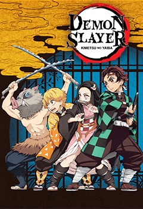
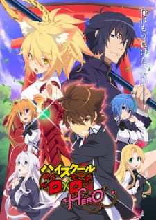

Anime
Anime merupakan animasi dari Jepang yang digambar dengan tangan maupun menggunakan teknologi komputer. Kata anime merupakan singkatan dari "animation" dalam bahasa Inggris, yang merujuk pada semua jenis animasi. Didalam Anime sendiri terdappat kategori-kategori khusus yang disebut dengan genre. Berikut adalah genre genre terpopuler dalam anime.
Action

Action merupakan genre anime yang sangat populer,Hampir semua anime yang hits dimasing masing jaman merupakan anime bergenre Action. Genre anime ini menyuguhkan adegan pertarungan didalamnya baik menggunakan fisik maupun energi lain seperti sihir maiupun tenaga dalam. Contoh anime bergenre Action adalah Naruto, One Punch Man, & One Piece.
Romance

Romance berbeda dengan Action, Romance merupakan genre anime yang adegan percintanan yang sangat dominan dimana setiap adegan romantis akan sangat di highlight dalam anime bergenre ini.Contoh Anime bergenre Romance adalah Kimi no nawa, Kaicho wa maid sama, & Shigatsu wa Kimi no Uso.
Comedy

Di anime bergenre Comedy seperti yang ketahui komedi merupakan hal yang dapat membaut kita ketawa. Tentu saja anime bergenre Comedy ini berisi scene lawakan lawakan yang dapat mengocak perut kit, baik disampaikan lewat perkataan maupun perbuatan karakter dalam anime. Contoh Anime bergenre Comedy adalah Gintama, Danshi Koukousei no Nichijou, & Saiki Kusuo No Psi-nan.
Demon

Seperti namanya Demon, Anime bergenre ini akan memuat karakter iblis didalamnya. Tapi karakter iblis didalam anime bergenre ini tidak selamanya menakutkan. Kebanyakan anime bergenre Demon ini karakter iblis didalamnya dirupakan dalam bentuk humanoid atau manusia. Contoh Anime bergenre Demon adalah Kimetsu No Yaiba, Hataraku Maou Sama, & Beelzebub.
Echi

Sebenarnya genre anime ini haruslah kalian hindari karena dapat menimbulkan sensasi sensasi panas. Echi merupakan genre yang berisi adegan adegan dewasa yang mesum yang karena anime bergenre Echi berisi hal dewasa maka penontonnya pun harus dewasa pula yang paling tidak berumur 18 tahun keatas. Contoh Anime Genre Ini adalah Kiss x sis, Highschool DXD, & Prison School.
Jadi itulah macam macam genre anime paling populer yang ada dalam dunia anime. Semoga tulisan ini dapat bermanfaat bagi membaca dalam mengetahui apa saja genre anime yang ada.